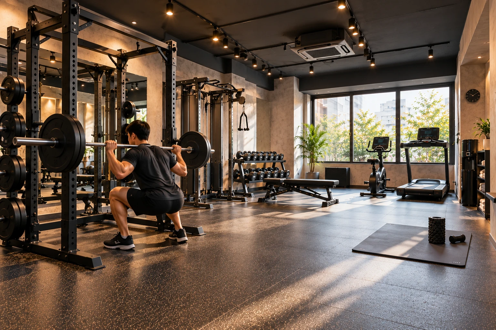
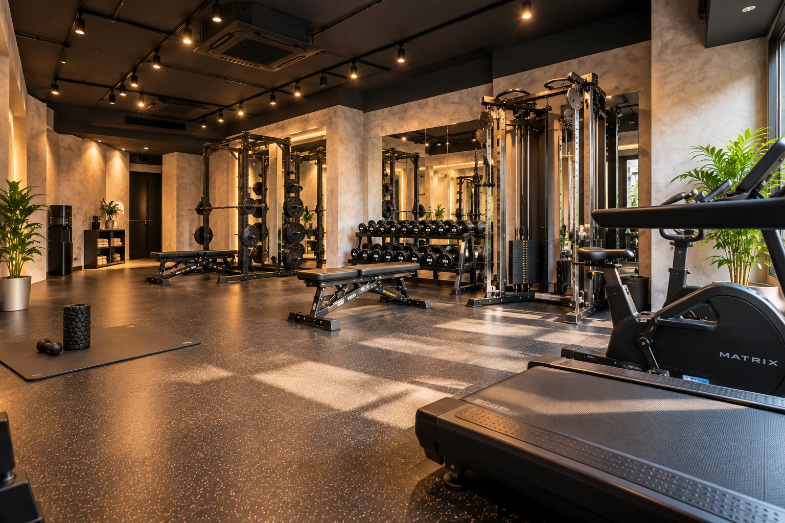

SELF TRAINING
ひとりで、自由に。
予約した60分を、完全貸切空間で自分のペースで利用します。
月会費に含まれます
PRIVATE TRAINING GYM / FUKUOKA
完全予約制・完全貸切。
予約した60分を、自分だけの空間に。
ABOUT SOLO GYM
ソロジムは、完全予約制・完全貸切型のトレーニングジムです。周囲の視線やマシンの順番を気にせず、自分のペースで集中できます。
ひとりで使う日も、プロのサポートを受ける日も。過ごし方は自分で選べます。
ABOUTを見る02 / TRAINING & SERVICE

予約した60分を、完全貸切空間で自分のペースで利用します。
月会費に含まれます目的に合わせてトレーナーを選び、マンツーマンでサポートを受けられます。
＋5,500円 / 60min
03 / PRIVATE SPACE
一人でトレーニングするために必要な設備を、コンパクトな空間に揃えました。
TRAINERS
目的や悩みに合わせて選べる、5名のトレーナーが在籍しています。

TRAINER 01

TRAINER 02

TRAINER 03

TRAINER 04

TRAINER 05
05 / PRICE
入会金
¥11,000月会費 / SELF INCLUDED
¥7,000/ monthPERSONAL TRAINING
＋¥5,500/ 60min06 / HOW TO USE
空き状況を確認し、利用日時とSELFまたはPERSONALを選択。
予約時間の5分前を目安に来店し、トレーニングの準備をします。
予約した空間で、自分のトレーニングに集中します。
YOUR60 MINUTES.
予約した60分を、
自分だけのトレーニング時間に。